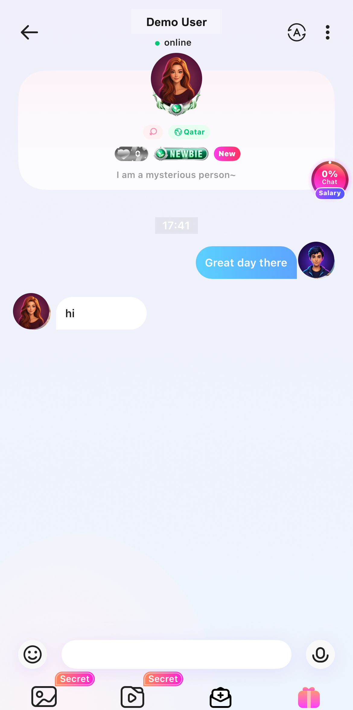
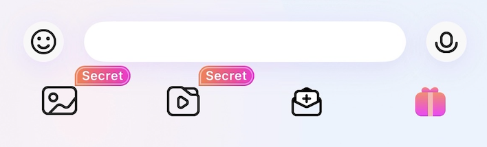
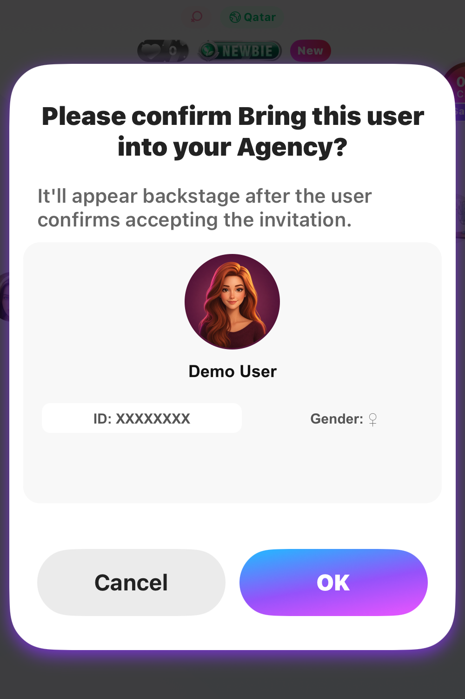
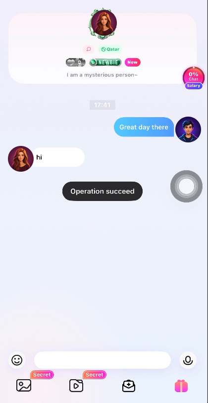
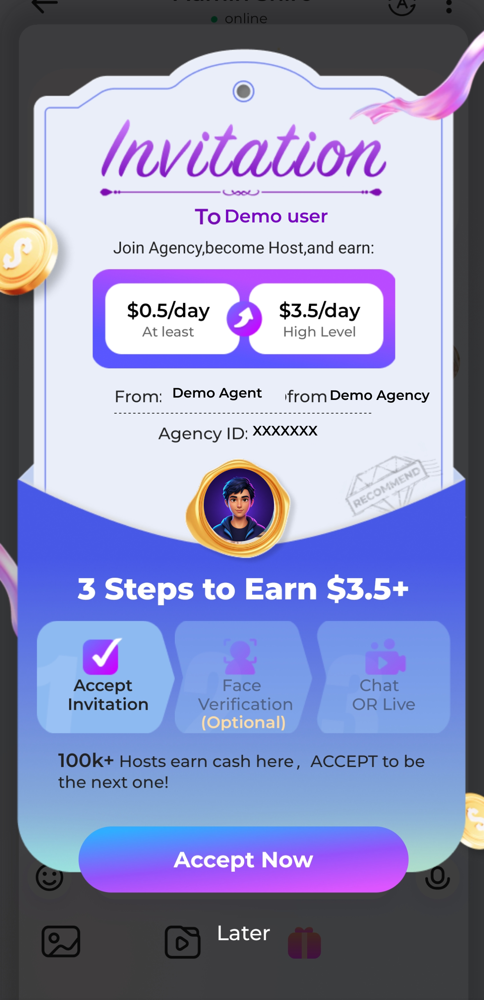
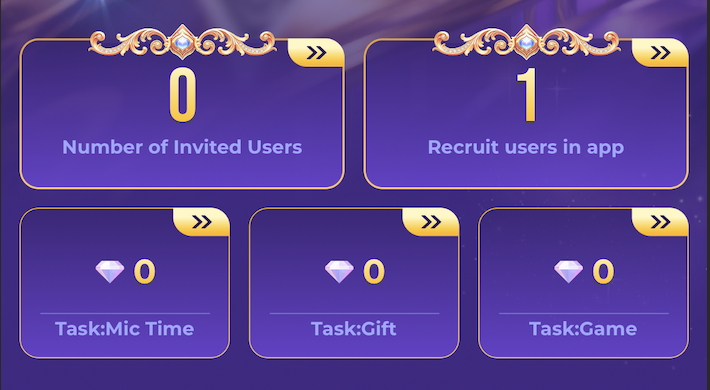
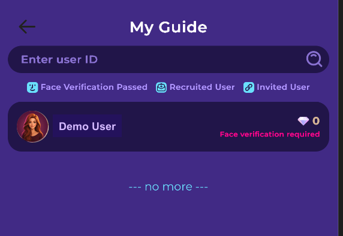
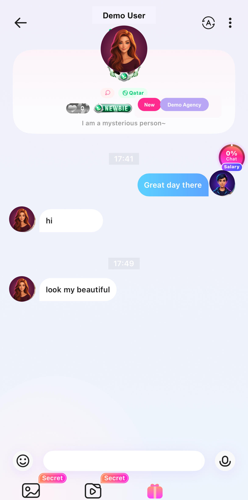

Invitez directement depuis votre conversation un utilisateur éligible à rejoindre votre Agency.
Pour Agents et Hosts
Avant de commencer
Toutes les conditions doivent être remplies
01Vous êtes Agent ou Host.
02Vous avez réussi la vérification faciale.
03L’utilisateur n’a encore rejoint aucune Agency.
04L’utilisateur vous a envoyé au moins un message privé.
Important : la cible n’a pas besoin de la vérification faciale avant l’envoi de l’invitation.
Fonctionnement
6 étapes pour recruter
1
Démarrer la conversation
Recevoir au moins une réponse
Chacun peut démarrer le chat. Avant le recrutement, l’utilisateur doit vous avoir envoyé au moins un message privé.
Le message reçu « hi » remplit la condition de réponse.

Gardez le profil visible : l’absence de badge Agency signifie que l’utilisateur n’est pas encore Host.
2
Envoyer l’invitation
Appuyer sur l’icône Recruit
Appuyez sur l’icône enveloppe-plus dans la barre du chat. Elle apparaît uniquement si vous et la cible remplissez les conditions.

Appuyez ici
Appuyez sur le bouton enveloppe-plus dans la barre inférieure.
3
Vérifier l’utilisateur
Confirmer le recrutement
Vérifiez les informations de l’utilisateur, puis appuyez sur OK pour envoyer l’invitation.

Vérifiez qu’il s’agit du bon utilisateur avant l’envoi.
4
Invitation envoyée
Attendre l’acceptation
Le message noir Operation succeed confirme uniquement l’envoi de l’invitation.
Invitation envoyée ≠ User joinedL’utilisateur doit encore appuyer sur Accept Now.

5
Action du destinataire
L’utilisateur appuie sur Accept Now
L’utilisateur reçoit une invitation dans le chat privé. Le recrutement est terminé uniquement après avoir appuyé sur Accept Now. Later ne termine pas le processus.

Les montants et les tâches suivent le dernier affichage de l’application.
6
Vérifier le résultat
Consulter le suivi du recrutement
Utilisez la page de l’activité pour consulter les utilisateurs recrutés et leur statut.
1Ouvrez la page de l’activité et appuyez sur Recruit users in app.
2Consultez la fiche dans My Guide.

Appuyez ici
Appuyez sur la flèche en haut à droite de la carte Recruit users in app.

My Guide affiche la relation de recrutement et le statut actuel de vérification faciale ou des tâches.
Étape suivante
L’utilisateur devient Host
Après acceptation, l’utilisateur rejoint votre Agency, devient Host et accède à la page Salary actuelle. Les tâches et valeurs suivent l’affichage de l’application.
Si l’utilisateur appartient déjà à une Agency, il est déjà Host et ne peut pas être recruté par ce parcours. L’icône Recruit n’apparaît pas.

Le badge Demo Agency confirme que cet utilisateur est déjà Host.